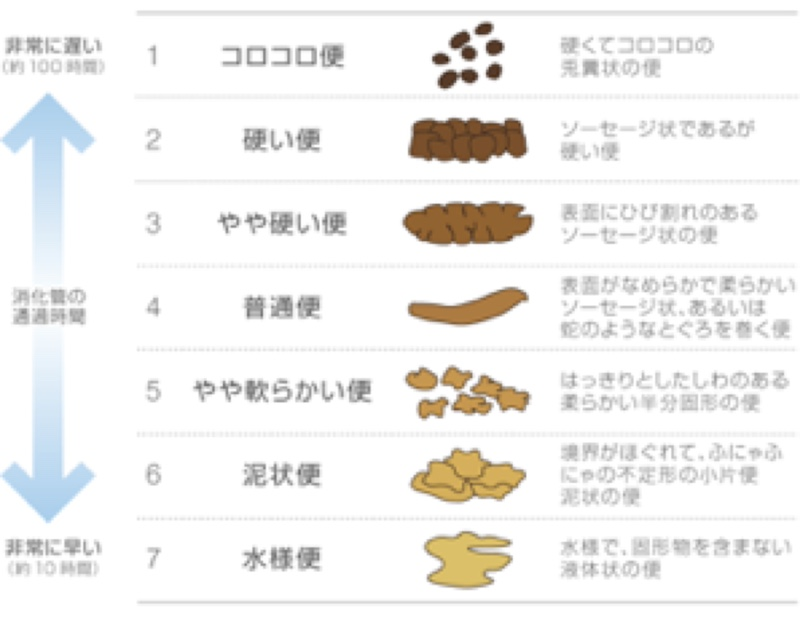

トップページに戻る
公開日：2026年5月｜最終更新：2026年5月
ポイント
便秘の改善は「生活習慣の見直し」が基本です。
無理なく続けられる方法を組み合わせることが大切です。
第１章 基本の対策
- 水分をしっかりとる
- 食事内容を見直す
- 体を動かす
- 排便習慣を整える
次章でそれぞれを詳しく解説します。
第２章 水分補給
- 1日1.5〜2Lを目安（※持病がある場合は医師に相談）
- 尿の色が「薄い黄色」を目安にする
- 起床時の水は腸を刺激する
コツ
一度にたくさん飲むのではなく、「こまめに少しずつ」がポイントです。
第３章 食事の工夫
- 食事量をしっかり確保する
- 食物繊維をバランスよくとる
- 発酵食品（ヨーグルト・納豆など）を取り入れる
食物繊維のポイント
- 水溶性：便をやわらかくする
- 不溶性：便のかさを増やす
補助としてのサプリ
食事で不足する場合は、食物繊維（イヌリンなど）、乳酸菌、オリゴ糖などのサプリメントも有効です。
ただし、あくまで「補助」として活用しましょう。
第４章 運動
運動は腸の動きを活発にします。
第５章 排便習慣
- 毎日決まった時間にトイレに行く
- 便意を我慢しない
- 朝食後のトイレ習慣が特に有効
トイレ環境
- 洋式トイレの使用
- 手すりの設置
- 安心して排便できる環境づくり
第６章 マッサージ
お腹を「の」の字に優しくマッサージすると、腸の動きを助けます。
- 仰向けに寝て、おへその下から、時計回りに行う
- ゆっくりと呼吸しながら行う
- 強く押しすぎない
これ以外にいろいろなマッサージ方法があるようです。
第７章 薬について
- 浸透圧性下剤（便をやわらかくする）
- 刺激性下剤（腸を動かす）
- 新しいタイプの便秘薬
刺激性下剤の使いすぎには注意が必要です。
医師・薬剤師に相談して使用しましょう。
第８章 便の状態をチェック
理想的な便は「やややわらかく、スムーズに出る状態」です。
- コロコロ便 → 便秘傾向
- バナナ状 → 理想的
- 水様便 → 下痢
チェックの習慣
便の状態や色を日頃から観察することで、体調の変化に早く気づくことができます。
便の色と硬さに関して、付録として、最後に、まとめて記載しています。
第９章 まとめ
高齢者の便秘は、生活習慣の見直しで改善できることが多くあります。
無理のない範囲で継続することが最も重要です。
- 水分・食事・運動のバランス
- 排便習慣の確立
- 必要に応じて医療の力を借りる
大切な考え方
「すぐに出す」ことよりも、「自然に出る状態をつくる」ことが大切です。
付録：便の色と疾病の関係（専門的ですので、読み飛ばしてください）
便の色と体の状態（早見表）
便の色は体調を知る重要なサインです。気になる変化があれば早めに対応しましょう。
| 便の色 |
特徴 |
考えられる主な原因 |
受診の目安 |
| 黒色 |
タール状・粘り気あり |
胃・十二指腸の出血（胃潰瘍・胃がんなど） |
すぐ受診 |
| 赤色 |
鮮血が付着・混入 |
痔・大腸ポリープ・大腸がんなど |
繰り返す場合は受診 |
| 黄色 |
ベタつく・悪臭（脂肪便） |
膵臓・胆汁の異常、吸収障害 |
続く場合は受診 |
| 灰白色・白色 |
色が抜けたような便 |
胆道閉塞・肝胆道系の病気 |
早めに受診 |
| 緑色 |
やや緑がかった便 |
下痢・腸の動きが速い・食事の影響 |
症状があれば受診 |
| 茶褐色（正常） |
バナナ状・自然な色 |
健康な状態 |
問題なし |
補足
- 鉄剤やイカ墨で黒くなることがあります（心配ない場合あり）
- バリウム検査後は白くなることがあります（正常な変化）
- 一時的な変化より「続くかどうか」が重要です
付録：便の硬さについて（プリストルスケール）

３（やや硬い便）〜５（やや軟らかい便）が正常な範囲と言われ、4（普通便）が理想的です。
◀︎ 前へ（原因とリスク）
▶ 次へ（食物繊維に関して）
トップページに戻る